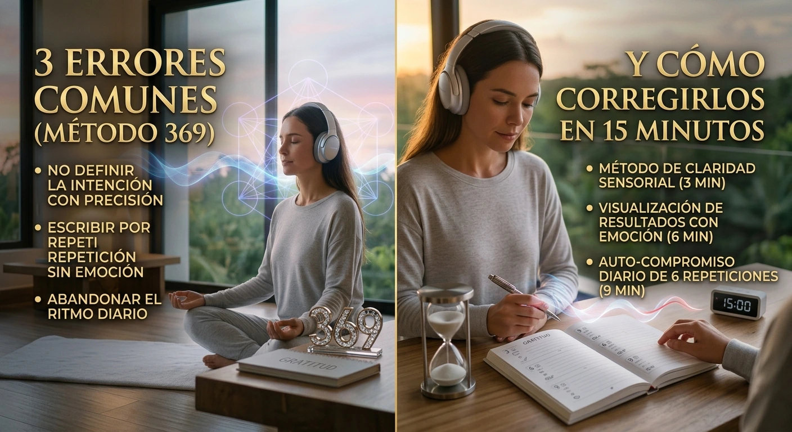

Llevas semanas o incluso meses intentando aplicar el método 369. Escribes tus objetivos 3 veces por la mañana, 6 veces por la tarde y 9 veces por la noche, o dejas reproducciones en segundo plano mientras intentas concentrarte. Sin embargo, sientes que la rumiación mental continúa, el estrés por tus metas financieras no desaparece y la claridad estratégica parece no llegar. Es natural preguntarse: ¿Por qué el método 369 parece generar calma y enfoque en otros mientras a ti te deja atrapado en la misma tensión diaria?
La razón principal no es que carezcas de disciplina o que la resonancia armónica no funcione. El problema real radica en que existen barreras técnicas y de resistencia mental que neutralizan el impacto de las frecuencias. Si buscas cómo aprovechar la frecuencia 369 para mejorar tu enfoque y tomar mejores decisiones pero sigues cayendo en fallos de audio y sobreesfuerzo, solo estás acumulando frustración. A continuación, analizamos los 3 errores comunes al aplicar la frecuencia 369 y cómo solucionarlos mediante tecnología acústica pura.
Error 1: Trabajar bajo Resistencia Subconsciente y Estrés Activo
El primer error es intentar concentrarte o proyectar metas desde la mente consciente mientras tu sistema nervioso está operando bajo estrés o ansiedad. Nikola Tesla identificó en los patrones 3, 6 y 9 una matemática fundamental de la energía y la frecuencia. Sin embargo, cuando intentas aplicar el código 369 repitiendo decretos mientras experimentas angustia por tus finanzas o proyectos, tu mente analítica activa una respuesta de rechazo.
Esta barrera analítica actúa como un filtro. Si repites afirmaciones de éxito pero tu estado fisiológico es de alerta o tensión, tu cerebro procesa esa discrepancia. La emoción predominante (el estrés) mantiene la actividad bioeléctrica en ondas Beta altas. Mientras no reduzcas el ruido de la mente analítica, el esfuerzo consciente por mantener el enfoque resulta desgastante e ineficaz.
"El verdadero cambio de perspectiva no ocurre desde el esfuerzo lógico, sino cuando logras calmar la hiperactividad del subconsciente."
Error 2: Depender de Audios Comprimidos en MP3 que Mutilan la Frecuencia
Muchos usuarios recurren a plataformas gratuitas para escuchar audios binaurales para la concentración , dejando la reproducción de fondo esperando un cambio significativo. Es aquí donde se presenta el mayor inconveniente técnico: la compresión de audio digital.
Plataformas como YouTube o Spotify aplican algoritmos de compresión destructivos (como MP3 a 128 kbps) para reducir el consumo de datos. Estos códecs recortan las frecuencias sutiles y los armónicos superiores, justo donde residen los micro-pulsos binaurales y la precisión matemática del patrón 369 . Lo que llega a tus oídos es un sonido plano, privado de la estructura bioacústica necesaria para facilitar el arrastre cerebral a ondas Alfa y Theta.
| Parámetro Neuroacústico | Audios Gratuitos en Streaming / MP3 | QuantumAudio® Master WAV 24-Bit |
|---|---|---|
| Calidad del Espectro de Onda | Recortada por compresión algorítmica | Pura de Estudio Máster (100% intacta) |
| Inducción a Ondas Cerebrales | Superficial / Interrumpida por ruido | Directa a estados Alfa y Theta profundos |
| Preservación Microfrecuencias 369 | Distorsionadas por compresión | Frecuencias de fase pura y alta precisión |
| Continuidad del Sonido | Anuncios e interrupciones constantes | Sesión limpia para inmersión total |
| Exigencia de Concentración | Alta (Requiere esfuerzo consciente) | Escucha 100% Pasiva y relajante |
¿Quieres experimentar la verdadera frecuencia de 24 Bits sin pérdida?
Descubre cómo la estimulación neuroacústica sin compresión de datos ayuda a calmar la hiperactividad cerebral y facilita estados de relajación profunda. Conoce cómo la arquitectura sonora de QuantumAudio® reemplaza la tensión mental por una escucha pasiva y efectiva.
Conocer más sobre QuantumAudio®Error 3: Forzar la Mente en Lugar de Recurrir a la Escucha Pasiva
El tercer error recurrente al utilizar el 369 es la sobreexigencia mental. Tratar de forzar la visualización o mantenerse en un estado emocional específico durante períodos prolongados cuando se está fatigado genera fatiga cognitiva y eleva el cortisol. En un estado de fatiga o alerta, resulta muy difícil reestructurar hábitos mentales o mantener la claridad de ideas.
La investigación en neuroacústica demuestra que la autorregulación y la apertura a nuevas ideas se facilitan mediante la Escucha Pasiva . No se requiere dominar técnicas complejas de meditación ni luchar contra el flujo de pensamientos. Al exponer el sistema auditivo a señales sin pérdida en formato WAV de 24 bits configuradas con resonancia armónica, la actividad bioeléctrica del cerebro tiende a sincronizarse naturalmente con el estímulo acoplado.
⚠️ RECOMENDACIÓN DE USO NEUROACÚSTICO
Debido al estado de relajación profunda e inducción a ondas lentas que fomenta la señal mÁster de 24 bits, no debes escuchar estas sesiones mientras conduces vehículos o realizas actividades que requieran atención operativa inmediata.
CÓMO OPTIMIZAR TU EXPERIENCIA NEUROACÚSTICA EN 3 PASOS
Para superar estos inconvenientes técnicos y maximizar el beneficio de las frecuencias 369 en tu rutina diaria, considera los siguientes pasos:
- Facilita el Arrastre Acústico: Utiliza tonos puros para reducir la rumiación mental en lugar de forzar el pensamiento positivo cuando sientas estrés.
- Prioriza Formatos de Audio sin Pérdida: Reproduce contenido en WAV de 24 bits para asegurar que los pulsos e intervalos binaurales mantengan su integridad espectral.
- Aprovecha los Momentos de Reposo: Escucha los audios en entornos tranquilos, al despertar o antes de dormir, permitiendo que la estimulación sonora actúe de manera pasiva.
Caso de Experiencia: Roberto M. (34 años)
Usuario de sesiones de enfoque y relajación"Llevaba meses intentando concentrarme escuchando videos de frecuencias en YouTube mientras trabajaba, pero terminaba con fatiga auditiva por la mala calidad del sonido. Cuando entendí el impacto de la compresión en los audios y probé una señal pura en 24 bits de manera totalmente pasiva, la diferencia en mi nivel de tensión mental fue notable. Logré organizar mis ideas con mucha más claridad y reducir el estrés diario."
Experimenta la Claridad Mental con el Patrón de Tesla
Supera la fatiga causada por métodos rígidos que chocan con la tensión cotidiana. Explora la estimulación acústica de alta fidelidad, reduce el ruido mental y descubre los beneficios de una señal limpia con QuantumAudio® .
Conocer más sobre QuantumAudio®Un Enfoque Técnico para tu Bienestar y Claridad
El método 369 basado en los principios de frecuencia de Tesla ofrece un marco valioso para la concentración y la disciplina personal. Sin embargo, para obtener resultados consistentes es fundamental cuidar la calidad del estímulo auditivo y el estado receptivo del cerebro. Al optar por formatos mÁster de 24 bits y adoptar una práctica pasiva sin tensión, creas las condiciones ideales para mejorar tu enfoque, reducir el estrés y abordar tus metas profesionales con mayor claridad.